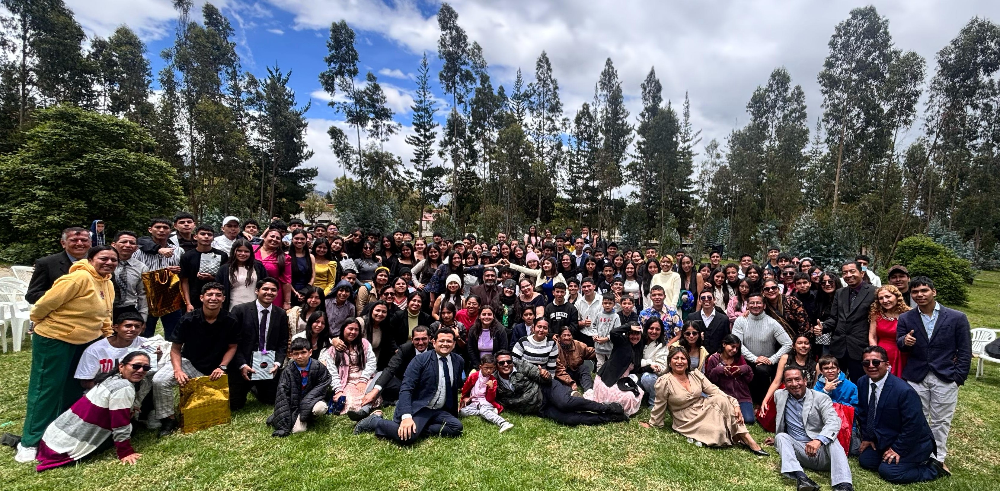

Nuestra Historia
La Pastoral de Post-Confirmación surgió en 1985 en la Parroquia de Mártires Canadienses en Roma, como respuesta del Camino Neocatecumenal al abandono de los jóvenes tras recibir la Confirmación. Desde entonces, se ha extendido por Europa y América, ofreciendo un espacio de apoyo y catequesis continua dentro de las parroquias.
Puntos Clave
- Origen: Roma, Parroquia de Mártires Canadienses, vinculada a la primera comunidad neocatecumenal.
- Motivación: Acompañar a los jóvenes en un periodo de cambios tras la Confirmación.
- Propósito: Que experimenten el amor de Dios y permanezcan en la Iglesia.
- Formato: Itinerario de catequesis con Palabra, Tradición, Magisterio y ágapes comunitarios.
- Rol del Camino: Servicio del Camino Neocatecumenal a las parroquias para la formación permanente en la fe.
En mayo de 2024, nuestra parroquia Santo Tomás de Aquino recibió la visita de hermanos de Roma, entre ellos el sacerdote Gianvito Sanfilippo, quien dirige la Post-Confirmación en todo el mundo, confirmando la importancia de este servicio en Guayaquil.